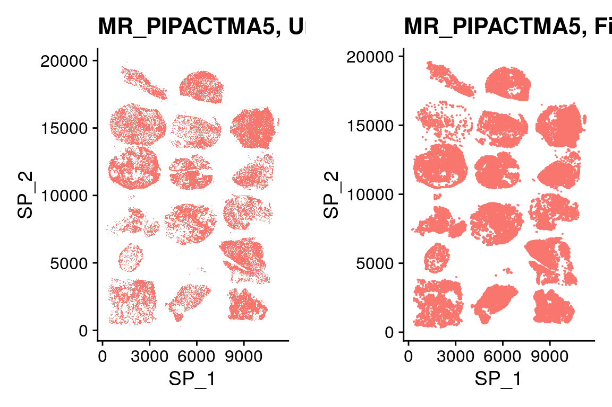

Xenium data processing
heinin
2024-09-17
Last updated: 2025-02-06
Checks: 5 2
Knit directory: PIPAC_spatial/
This reproducible R Markdown analysis was created with workflowr (version 1.7.1). The Checks tab describes the reproducibility checks that were applied when the results were created. The Past versions tab lists the development history.
The R Markdown is untracked by Git. To know which version of the R
Markdown file created these results, you’ll want to first commit it to
the Git repo. If you’re still working on the analysis, you can ignore
this warning. When you’re finished, you can run
wflow_publish to commit the R Markdown file and build the
HTML.
Great job! The global environment was empty. Objects defined in the global environment can affect the analysis in your R Markdown file in unknown ways. For reproduciblity it’s best to always run the code in an empty environment.
The command set.seed(20240917) was run prior to running
the code in the R Markdown file. Setting a seed ensures that any results
that rely on randomness, e.g. subsampling or permutations, are
reproducible.
Great job! Recording the operating system, R version, and package versions is critical for reproducibility.
Nice! There were no cached chunks for this analysis, so you can be confident that you successfully produced the results during this run.
Using absolute paths to the files within your workflowr project makes it difficult for you and others to run your code on a different machine. Change the absolute path(s) below to the suggested relative path(s) to make your code more reproducible.
| absolute | relative |
|---|---|
| /home/hnatri/PIPAC_spatial/ | . |
| /home/hnatri/PIPAC_spatial/code/colors_themes.R | code/colors_themes.R |
Great! You are using Git for version control. Tracking code development and connecting the code version to the results is critical for reproducibility.
The results in this page were generated with repository version 668678e. See the Past versions tab to see a history of the changes made to the R Markdown and HTML files.
Note that you need to be careful to ensure that all relevant files for
the analysis have been committed to Git prior to generating the results
(you can use wflow_publish or
wflow_git_commit). workflowr only checks the R Markdown
file, but you know if there are other scripts or data files that it
depends on. Below is the status of the Git repository when the results
were generated:
Ignored files:
Ignored: analysis/figure/
Untracked files:
Untracked: analysis/Xenium_processing.Rmd
Untracked: analysis/annotate.Rmd
Untracked: analysis/annotation.Rmd
Untracked: analysis/post_clustering.Rmd
Untracked: analysis/splitting_samples.Rmd
Untracked: code/PIPAC_colors_themes.R
Untracked: code/anndata_to_seurat.R
Untracked: code/plot_functions.R
Untracked: code/rapids_pipeline/
Note that any generated files, e.g. HTML, png, CSS, etc., are not included in this status report because it is ok for generated content to have uncommitted changes.
There are no past versions. Publish this analysis with
wflow_publish() to start tracking its development.
Packages and environment variables
suppressPackageStartupMessages({
library(workflowr)
library(arrow)
library(Seurat)
library(SeuratObject)
library(SeuratDisk)
library(tidyverse)
library(tibble)
library(ggplot2)
library(ggpubr)
library(ggrepel)
library(workflowr)})Environment variables and helper functions
setwd("/home/hnatri/PIPAC_spatial/")
set.seed(9999)
options(scipen = 99999)
options(ggrepel.max.overlaps = Inf)
# Colors, themes, and cell type markers
#source("/home/hnatri/PIPAC_spatial/code/colors_themes.R")
# A simplified VlnPlot
BetterVlnPlot <- function(data, features, group_by, ylim = NA){
VlnPlot(data, pt.size = 0, features = features,
group.by = group_by, y.max = ylim) + labs(x = "") + NoLegend()
}
# DimPlots of before and after for each sample
DimPlotCompare <- function(tma){
bf_cells <- ncol(subset(merged_spatial_unfiltered, subset = TMA == tma))
a <- DimPlot(subset(merged_spatial_unfiltered, subset = TMA == tma),
reduction = "sp") + NoLegend() +
labs(title = paste0(tma, ", Unfiltered, ", bf_cells, " nuclei"))
aft_cells <- ncol(subset(merged_spatial, subset = TMA == tma))
b <- DimPlot(subset(merged_spatial, subset = TMA == tma),
reduction = "sp") + NoLegend() +
labs(title = paste0(tma, ", Filtered, ", aft_cells, " nuclei"))
ggarrange(a,b)
}Import data
# /tgen_labs/banovich/xenium_run_folders/output-XETG00048__0034123__MR_PIPACTMA1__20240911_210055
# /tgen_labs/banovich/xenium_run_folders/PIPACTMA
data_dir <- "/tgen_labs/banovich/xenium_run_folders/PIPACTMA/"
tma_list <- c(
TMA1 = "output-XETG00048__0034123__MR_PIPACTMA1__20240911__210055",
TMA2 = "output-XETG00048__0034221__MR_PIPACTMA2-Rerun__20241107__213721",
TMA3 = "output-XETG00048__0024823__MR_PIPACTMA3-Rerun__20241115__191438",
TMA4 = "output-XETG00048__0033982__MR_PIPACTMA4__20240920__231140",
TMA5 = "output-XETG00048__0033981__MR_PIPACTMA5__20240920__231140",
TMA6 = "output-XETG00048__0034149__MR_PIPACTMA6__20240923__231239",
TMA7 = "output-XETG00048__0034152__MR_PIPACTMA7__20240923__231239",
TMA8 = "output-XETG00048__0033448__MR_PIPACTMA8__20241224__204450",
TMA9 = "output-XETG00048__0041382__MR_PIPACTMA9__20250109__205856")
# Get subdirectory names for obtaining file paths
subdirs <- unname(tma_list)
# Get transcript counts and metadata
all_files <- list.files(file.path(data_dir, subdirs), full.names = TRUE)
h5_files <- all_files[grep(".h5", all_files)]
transcript_files <- all_files[grep("transcripts.parquet", all_files)]
meta_files <- all_files[grep("cells.csv.gz", all_files)]
# Get sample IDs
tma_ids <- names(tma_list)
# Read in files
counts <- lapply(h5_files, Read10X_h5)
transcripts <- lapply(transcript_files, function(XX) {
read_parquet(XX) })
metadata <- lapply(meta_files, function(XX) {
tmp_meta <- read.delim(XX, sep = ",", colClasses = c(cell_id = "character"))
rownames(tmp_meta) <- tmp_meta$cell_id
tmp_meta })
# Rename files in lists
tma_ids <- unlist(lapply(str_split(meta_files, "__"), function(XX) { XX[3] }))
names(counts) <- tma_ids
names(transcripts) <- tma_ids
names(metadata) <- tma_idsGet transcripts that only overlap the nucleus, create cell x gene matrix, and count the number of blanks per cell
all_transcripts <- list()
nuc_transcripts <- list()
updated_metadata <- list()
for (tma in tma_ids) {
message(paste("Getting nuclei counts for sample", tma))
# Filter out low quality transcripts
all_transcripts[[tma]] <- transcripts[[tma]][transcripts[[tma]]$qv > 20, ]
# Find transcripts that overlap a nucleus
nuc_transcripts[[tma]] <- transcripts[[tma]][transcripts[[tma]]$overlaps_nucleus == "1", ]
# Create cell x gene dataframe
nuc_transcripts[[tma]] <- as.data.frame(table(nuc_transcripts[[tma]]$cell_id,
nuc_transcripts[[tma]]$feature_name))
names(nuc_transcripts[[tma]]) <- c("cell_id", "feature_name", "Count")
nuc_transcripts[[tma]] <- nuc_transcripts[[tma]] %>%
pivot_wider(names_from = "feature_name", values_from = "Count")
# Get blanks count per nucleus
blank_nuc_ids <- nuc_transcripts[[tma]]$cell_id
blank_nuc_mat <- nuc_transcripts[[tma]][, grep("BLANK",
colnames(nuc_transcripts[[tma]]))]
blank_nuc_counts <- as.data.frame(rowSums(blank_nuc_mat))
blank_nuc_counts$cell_id <- blank_nuc_ids
# Remove negative controls and convert to cell x gene matrix
nuc_transcripts[[tma]] <- nuc_transcripts[[tma]][, grep("NegControl",
colnames(nuc_transcripts[[tma]]),
invert = TRUE)]
nuc_transcripts[[tma]] <- nuc_transcripts[[tma]][, grep("BLANK",
colnames(nuc_transcripts[[tma]]),
invert = TRUE)]
keep_cells <- nuc_transcripts[[tma]]$cell_id
nuc_transcripts[[tma]] <- as.data.frame(nuc_transcripts[[tma]])
rownames(nuc_transcripts[[tma]]) <- keep_cells
nuc_transcripts[[tma]] <- nuc_transcripts[[tma]][, -1]
nuc_transcripts[[tma]] <- as.matrix(t(nuc_transcripts[[tma]]))
# Subset nuclear metadata to "cells" with transcripts that overlap nuclei
updated_metadata[[tma]] <- metadata[[tma]][metadata[[tma]]$cell_id %in% keep_cells, ]
# Add blank counts to metadata
updated_metadata[[tma]] <- full_join(updated_metadata[[tma]], blank_nuc_counts,
by = "cell_id")
updated_metadata[[tma]] <- updated_metadata[[tma]] %>%
dplyr::rename(num.blank = `rowSums(blank_nuc_mat)`)
rownames(updated_metadata[[tma]]) <- updated_metadata[[tma]]$cell_id
}Create Seurat objects
obj_list <- list()
obj_list <- sapply(tma_ids, function(XX) {
# Create a Seurat object containing the RNA adata
sobj <- CreateSeuratObject(counts = nuc_transcripts[[XX]],
assay = "RNA")
# Add metadata
sobj <- AddMetaData(sobj, metadata = updated_metadata[[XX]])
sobj$TMA <- XX
#sobj$tma <- tmas[[XX]]
#sobj$run <- run_ids[[XX]]
# Calculate percent blank
sobj$percent.blank <- sobj$num.blank/(sobj$nCount_RNA + sobj$num.blank)*100
# Remove cells with 0 nCount_RNA
sobj <- subset(sobj, subset = nCount_RNA != 0)
# Rename cells to add TMA name as prefix
cellid <- gsub("MR_PIPAC", "", XX)
cellid <- gsub("-Rerun", "", cellid)
sobj <- RenameCells(sobj, add.cell.id = cellid)
# Add spatial coordinates as dimension reduction objects
#position_xy <- cbind(sobj$adj_x_centroid, sobj$adj_y_centroid)
position_xy <- cbind(sobj$x_centroid, sobj$y_centroid)
row.names(position_xy) <- row.names(sobj@meta.data)
colnames(position_xy) <- c("SP_1", "SP_2")
sobj[["sp"]] <- CreateDimReducObject(embeddings = position_xy, key = "SP_",
assay = DefaultAssay(sobj))
obj_list[[XX]] <- sobj
})
#saveRDS(obj_list, "/scratch/hnatri/PIPAC/obj_list.rds")
# Get TMA IDs
tma_ids <- names(obj_list)Visualize
obj_list <- readRDS("/scratch/hnatri/PIPAC/obj_list.rds")
# Merge objects (cannot do spatial DimPlots for this)
#merged_spatial_unfiltered <- obj_list[[1]]
merged_spatial_unfiltered <- merge(x = obj_list[[1]], y = obj_list[2:length(obj_list)])
# Add spatial dimension reduction object separately
position_xy <- cbind(merged_spatial_unfiltered$x_centroid,
merged_spatial_unfiltered$y_centroid)
row.names(position_xy) <- row.names(merged_spatial_unfiltered@meta.data)
colnames(position_xy) <- c("SP_1", "SP_2")
merged_spatial_unfiltered[["sp"]] <- CreateDimReducObject(
embeddings = position_xy, key = "SP_", assay = DefaultAssay(merged_spatial_unfiltered))
DimPlot(merged_spatial_unfiltered,
reduction = "sp",
group.by = "TMA",
label = F,
split.by = "TMA",
ncol = 3) +
coord_fixed() + NoLegend()#saveRDS(merged_spatial_unfiltered, "/scratch/hnatri/PIPAC/merged_spatial_unfiltered.rds")Add cell level count data
# Get sample IDs
tma_ids <- names(obj_list)
cell_obj_list <- list()
cell_obj_list <- sapply(tma_ids, function(XX) {
message(paste("Creating cell Seurat object for TMA", XX))
# Create a Seurat object containing the RNA cell information
sobj <- CreateSeuratObject(counts = counts[[XX]]$`Gene Expression`,
assay = "RNA")
rownames(metadata[[XX]]) <- metadata[[XX]]$cell_id
sobj <- AddMetaData(sobj, metadata = metadata[[XX]])
# Rename cells to add sample ID as prefix
cellid <- gsub("MR_PIPAC", "", XX)
cellid <- gsub("-Rerun", "", cellid)
sobj <- RenameCells(sobj, add.cell.id = cellid)
cell_obj_list[[XX]] <- sobj
})
# Merge cell information
#cell_merged <- cell_obj_list[[1]]
cell_merged <- merge(cell_obj_list[[1]], y = cell_obj_list[2:length(cell_obj_list)])
# Add cell information to nuclei object
cell_merged <- JoinLayers(cell_merged)
cell_count_matrix <- cell_merged@assays$RNA$counts
keep_cells <- colnames(merged_spatial_unfiltered)
cell_count_matrix <- cell_count_matrix[, keep_cells]
merged_spatial_unfiltered[["cell_RNA"]] <- CreateAssayObject(counts = cell_count_matrix)
#saveRDS(merged_spatial_unfiltered, "/scratch/hnatri/PIPAC/merged_spatial_unfiltered.rds")QC
merged_spatial_unfiltered <- readRDS("/scratch/hnatri/PIPAC/merged_spatial_unfiltered.rds")
# Number of cells per TMA before filtering
summary(as.factor(merged_spatial_unfiltered$TMA)) MR_PIPACTMA1 MR_PIPACTMA2-Rerun MR_PIPACTMA3-Rerun MR_PIPACTMA4
163174 195030 239629 170103
MR_PIPACTMA5 MR_PIPACTMA6 MR_PIPACTMA7 MR_PIPACTMA8
178743 186174 255775 136737
MR_PIPACTMA9
137688 merged_spatial_unfiltered@meta.data %>%
ggplot(aes(x = TMA)) +
geom_bar(stat = "count") +
theme_minimal() +
RotatedAxis()# Percent.blank
merged_spatial_unfiltered@meta.data %>%
ggplot(aes(x = percent.blank, fill = TMA)) +
geom_histogram(bins = 50, show.legend = FALSE, color = "black") +
theme_classic() +
theme(title = element_text(color = "black"),
axis.text = element_text(color = "black")) +
facet_wrap(~TMA, scales = "free")# nCount_RNA
merged_spatial_unfiltered@meta.data %>%
ggplot(aes(x = nCount_RNA, fill = TMA)) +
geom_histogram(bins = 50, show.legend = FALSE, color = "black") +
theme_classic() +
theme(title = element_text(color = "black"),
axis.text = element_text(color = "black")) +
facet_wrap(~TMA, scales = "free")# nucleus_area
merged_spatial_unfiltered@meta.data %>%
ggplot(aes(x = nucleus_area, fill = TMA)) +
geom_histogram(bins = 50, show.legend = FALSE, color = "black") +
theme_classic() +
theme(title = element_text(color = "black"),
axis.text = element_text(color = "black")) +
facet_wrap(~TMA, scales = "free")merged_spatial_unfiltered$TMA <- factor(merged_spatial_unfiltered$TMA,
levels = rev(sort(unique(merged_spatial_unfiltered$TMA))))BetterVlnPlot(merged_spatial_unfiltered,
features = "percent.blank", group_by = "TMA")BetterVlnPlot(merged_spatial_unfiltered,
features = "nCount_RNA", group_by = "TMA")BetterVlnPlot(merged_spatial_unfiltered,
features = "nFeature_RNA", group_by = "TMA")BetterVlnPlot(merged_spatial_unfiltered,
features = "nucleus_area", group_by = "TMA")
## nCount_RNA vs. percent.blank
#smoothScatter(merged_spatial_unfiltered@meta.data$percent.blank,
# log(merged_spatial_unfiltered@meta.data$nCount_RNA),
# cex = 0.5, pch = 16)
#abline(v = 4, h = log(12), lty = "dashed", col = "black")
#text(5, 5, col = "black", adj = c(0, -.1),
# "nCount_RNA >= 12 & percent.blank <= 4")
#
## nFeature_RNA vs. percent.blank
#smoothScatter(merged_spatial_unfiltered@meta.data$percent.blank,
# log(merged_spatial_unfiltered@meta.data$nFeature_RNA),
# cex = 0.5, pch = 16)
#abline(v = 4, h = log(10), lty = "dashed", col = "black")
#text(5, 4, col = "black", adj = c(0, -.1),
# "nFeature_RNA >= 10 & percent.blank <= 4")
# nCount_RNA vs. nFeature_RNA
smoothScatter(log(merged_spatial_unfiltered$nCount_RNA),
log(merged_spatial_unfiltered$nFeature_RNA),
cex = 0.5, pch = 16)
abline(v = log(10), h = log(10), lty = "dashed", col = "black")
text(0.3, 4.6, col = "black", adj = c(0, -.1),
"nCount_RNA >= 10 & nFeature_RNA >= 10")smoothScatter(merged_spatial_unfiltered$nCount_RNA,
merged_spatial_unfiltered$nFeature_RNA,
cex = 0.5, pch = 16)
abline(v = log(10), h = log(10), lty = "dashed", col = "black")
text(0.3, 4.6, col = "black", adj = c(0, -.1),
"nCount_RNA >= 10 & nFeature_RNA >= 10")# nCount RNA vs. nucleus_area
smoothScatter(merged_spatial_unfiltered$nucleus_area,
log(merged_spatial_unfiltered$nCount_RNA),
cex = 0.5, pch = 16)
abline(v = c(5, 80), h = log(10), lty = "dashed", col = "black")
text(120, 0.7, col = "black", adj = c(0, -.1),
"nCount_RNA >= 10 & nucleus_area between 5-80")
# nFeature RNA vs. nucleus_area
smoothScatter(merged_spatial_unfiltered$nucleus_area,
log(merged_spatial_unfiltered$nFeature_RNA),
cex = 0.5, pch = 16)
abline(v = c(5, 80), h = log(10), lty = "dashed", col = "black")
text(120, 0.4, col = "black", adj = c(0, -.1),
"nFeature_RNA >= 10 & & nucleus_area between 5-80")min(merged_spatial_unfiltered$nucleus_area)[1] 1.399844max(merged_spatial_unfiltered$nucleus_area)[1] 308.4624Filter
# Filter merged and individual data
merged_spatial <- subset(merged_spatial_unfiltered,
subset = nCount_RNA >= 10 & nFeature_RNA >= 10 &
percent.blank <= 5 &
nucleus_area >= 5 & nucleus_area <= 80)
# Number of nuclei before and after filtering
bf_cells <- table(merged_spatial_unfiltered$TMA)
aft_cells <- table(merged_spatial$TMA)
diff_cells <- bf_cells - aft_cells
prop_kept_cells <- round(aft_cells/bf_cells*100, 2)
prop_kept_cells
MR_PIPACTMA9 MR_PIPACTMA8 MR_PIPACTMA7 MR_PIPACTMA6
62.12 57.79 66.89 70.08
MR_PIPACTMA5 MR_PIPACTMA4 MR_PIPACTMA3-Rerun MR_PIPACTMA2-Rerun
52.42 60.45 69.48 68.95
MR_PIPACTMA1
61.16 # DimPlots before and after filtering
DimPlotCompare("MR_PIPACTMA1")DimPlotCompare("MR_PIPACTMA2-Rerun")DimPlotCompare("MR_PIPACTMA3-Rerun")DimPlotCompare("MR_PIPACTMA4")DimPlotCompare("MR_PIPACTMA5")
DimPlotCompare("MR_PIPACTMA6")DimPlotCompare("MR_PIPACTMA7")DimPlotCompare("MR_PIPACTMA8")DimPlotCompare("MR_PIPACTMA9")# Saving the object for clustering with ScanPy
merged_spatial <- JoinLayers(merged_spatial)
saveRDS(merged_spatial, "/scratch/hnatri/PIPAC/merged_spatial_filtered.rds")
# To build on command line, run Rscript -e "rmarkdown::render('/home/hnatri/PIPAC_Xenium/analysis/Xenium_processing.Rmd')"
# Then "mv *.html /home/hnatri/PIPAC_Xenium/docs/"
sessionInfo()R version 4.3.0 (2023-04-21)
Platform: x86_64-pc-linux-gnu (64-bit)
Running under: Ubuntu 22.04.3 LTS
Matrix products: default
BLAS: /usr/lib/x86_64-linux-gnu/openblas-pthread/libblas.so.3
LAPACK: /usr/lib/x86_64-linux-gnu/openblas-pthread/libopenblasp-r0.3.20.so; LAPACK version 3.10.0
locale:
[1] LC_CTYPE=en_US.UTF-8 LC_NUMERIC=C
[3] LC_TIME=en_US.UTF-8 LC_COLLATE=en_US.UTF-8
[5] LC_MONETARY=en_US.UTF-8 LC_MESSAGES=en_US.UTF-8
[7] LC_PAPER=en_US.UTF-8 LC_NAME=C
[9] LC_ADDRESS=C LC_TELEPHONE=C
[11] LC_MEASUREMENT=en_US.UTF-8 LC_IDENTIFICATION=C
time zone: Etc/UTC
tzcode source: system (glibc)
attached base packages:
[1] stats graphics grDevices utils datasets methods base
other attached packages:
[1] ggrepel_0.9.3 ggpubr_0.6.0 lubridate_1.9.2
[4] forcats_1.0.0 stringr_1.5.0 dplyr_1.1.2
[7] purrr_1.0.2 readr_2.1.4 tidyr_1.3.0
[10] tibble_3.2.1 ggplot2_3.4.2 tidyverse_2.0.0
[13] SeuratDisk_0.0.0.9021 Seurat_5.0.1 SeuratObject_5.0.2
[16] sp_1.6-1 arrow_12.0.0 workflowr_1.7.1
loaded via a namespace (and not attached):
[1] RColorBrewer_1.1-3 rstudioapi_0.14 jsonlite_1.8.5
[4] magrittr_2.0.3 ggbeeswarm_0.7.2 spatstat.utils_3.0-3
[7] farver_2.1.1 rmarkdown_2.22 fs_1.6.2
[10] vctrs_0.6.5 ROCR_1.0-11 spatstat.explore_3.2-1
[13] rstatix_0.7.2 htmltools_0.5.5 broom_1.0.4
[16] sass_0.4.6 sctransform_0.4.1 parallelly_1.36.0
[19] KernSmooth_2.23-21 bslib_0.4.2 htmlwidgets_1.6.2
[22] ica_1.0-3 plyr_1.8.8 plotly_4.10.2
[25] zoo_1.8-12 cachem_1.0.8 whisker_0.4.1
[28] igraph_1.4.3 mime_0.12 lifecycle_1.0.3
[31] pkgconfig_2.0.3 Matrix_1.6-5 R6_2.5.1
[34] fastmap_1.1.1 fitdistrplus_1.1-11 future_1.32.0
[37] shiny_1.7.4 digest_0.6.31 colorspace_2.1-0
[40] patchwork_1.1.2 ps_1.7.5 rprojroot_2.0.3
[43] tensor_1.5 RSpectra_0.16-1 irlba_2.3.5.1
[46] labeling_0.4.2 progressr_0.13.0 timechange_0.2.0
[49] fansi_1.0.4 spatstat.sparse_3.0-1 httr_1.4.6
[52] polyclip_1.10-4 abind_1.4-5 compiler_4.3.0
[55] withr_2.5.0 bit64_4.0.5 backports_1.4.1
[58] carData_3.0-5 fastDummies_1.7.3 highr_0.10
[61] ggsignif_0.6.4 MASS_7.3-60 tools_4.3.0
[64] vipor_0.4.5 lmtest_0.9-40 beeswarm_0.4.0
[67] httpuv_1.6.11 future.apply_1.11.0 goftest_1.2-3
[70] glue_1.6.2 callr_3.7.3 nlme_3.1-162
[73] promises_1.2.0.1 grid_4.3.0 Rtsne_0.16
[76] getPass_0.2-4 cluster_2.1.4 reshape2_1.4.4
[79] generics_0.1.3 hdf5r_1.3.8 gtable_0.3.3
[82] spatstat.data_3.0-1 tzdb_0.4.0 hms_1.1.3
[85] data.table_1.14.8 car_3.1-2 utf8_1.2.3
[88] spatstat.geom_3.2-1 RcppAnnoy_0.0.20 RANN_2.6.1
[91] pillar_1.9.0 spam_2.9-1 RcppHNSW_0.5.0
[94] later_1.3.1 splines_4.3.0 lattice_0.21-8
[97] survival_3.5-5 bit_4.0.5 deldir_1.0-9
[100] tidyselect_1.2.0 miniUI_0.1.1.1 pbapply_1.7-0
[103] knitr_1.43 git2r_0.32.0 gridExtra_2.3
[106] scattermore_1.2 xfun_0.39 matrixStats_1.0.0
[109] stringi_1.7.12 lazyeval_0.2.2 yaml_2.3.7
[112] evaluate_0.21 codetools_0.2-19 cli_3.6.1
[115] uwot_0.1.14 xtable_1.8-4 reticulate_1.29
[118] munsell_0.5.0 processx_3.8.1 jquerylib_0.1.4
[121] Rcpp_1.0.10 globals_0.16.2 spatstat.random_3.1-5
[124] png_0.1-8 ggrastr_1.0.2 parallel_4.3.0
[127] ellipsis_0.3.2 assertthat_0.2.1 dotCall64_1.0-2
[130] listenv_0.9.0 viridisLite_0.4.2 scales_1.2.1
[133] ggridges_0.5.4 crayon_1.5.2 leiden_0.4.3
[136] rlang_1.1.1 cowplot_1.1.1